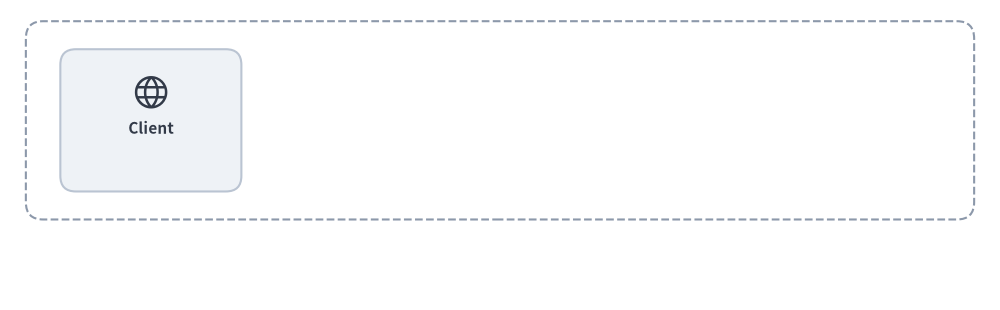
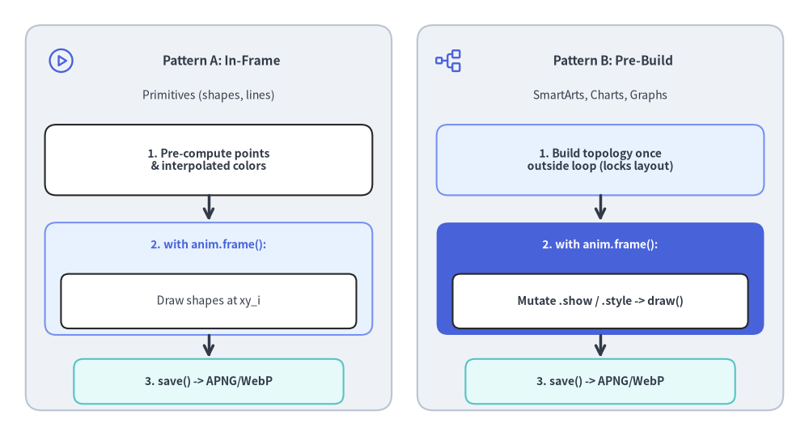
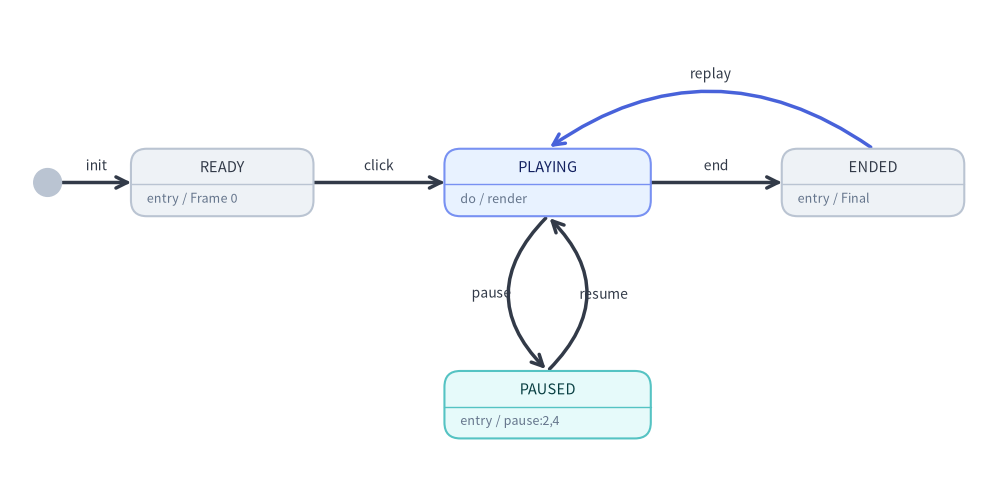

アニメーション概要 (APNG & WebP)
Drawlib は、APNG (Animated Portable Network Graphics) と Animated WebP の両フォーマットによるマルチフレームアニメーション生成をネイティブにサポートしています。
宣言的な Python コードを用いることで、開発者や AI コーディングエージェントは、高フレームレートで明快なステップバイステップのアーキテクチャ図解、データビジュアライゼーション、インタラクティブなウォークスルーを作成できます。

Source Code
from drawlib.anim import Animation
from drawlib.canvas import save, setup
from drawlib.icons import phosphor
from drawlib.lines import line
from drawlib.shapes import rectangle
from drawlib.styles import Styles
setup(width=116, height=36)
anim = Animation(fps=1.0, loop=0)
# Step 1: Base Client
with anim.frame(clear=True, duration=0.9):
rectangle((58, 22.0), width=110, height=23, style=Styles.MutedDashed.patch(shape_r=2.0))
rectangle(
(17.5, 22.0),
width=21,
height=16.5,
style=Styles.Neutral.patch(shape_r=1.8),
text="\nClient",
text_style=Styles.DarkBold.patch(text_size=11.0),
)
phosphor.globe((17.5, 25.3), width=4.6, style=Styles.Dark)
# Step 2: Gateway appears (Hero focal node)
with anim.frame(clear=False, duration=0.9):
rectangle(
(44.5, 22.0),
width=21,
height=16.5,
style=Styles.PrimaryFlat.patch(shape_r=1.8),
text="\nGateway",
text_style=Styles.WhiteBold.patch(text_size=11.0),
)
phosphor.shield_check((44.5, 25.3), width=4.6, style=Styles.White)
line((28.0, 22.0), (34.0, 22.0), arrow_head="->", style=Styles.DarkBold)
# Step 3: Compute Service appears
with anim.frame(clear=False, duration=0.9):
rectangle(
(71.5, 22.0),
width=21,
height=16.5,
style=Styles.PrimaryNeutral.patch(shape_r=1.8),
text="\nCompute",
text_style=Styles.DarkBold.patch(text_size=11.0),
)
phosphor.cpu((71.5, 25.3), width=4.6, style=Styles.Primary)
line((55.0, 22.0), (61.0, 22.0), arrow_head="->", style=Styles.DarkBold)
# Step 4: Database & Completed State (Held for 2.5 seconds before looping)
with anim.frame(clear=False, duration=2.5):
rectangle(
(98.5, 22.0),
width=21,
height=16.5,
style=Styles.SecondaryNeutral.patch(shape_r=1.8),
text="\nDatabase",
text_style=Styles.DarkBold.patch(text_size=11.0),
)
phosphor.database((98.5, 25.3), width=4.6, style=Styles.Secondary)
line((82.0, 22.0), (88.0, 22.0), arrow_head="->", style=Styles.DarkBold)
rectangle(
(58, 5.2),
width=58,
height=6.0,
style=Styles.PrimaryNeutral.patch(shape_r=1.5),
text="Architecture Completed",
text_style=Styles.DarkBold.patch(text_size=11.0),
)
save()
1. サポートされるアニメーションフォーマット
| フォーマット | 拡張子 | 主な利点 | 最適なユースケース |
|---|---|---|---|
| APNG | .png, .apng |
高い互換性: すべてのモダン Web ブラウザや GitHub の Markdown プレビューでネイティブに再生されます。PDF コンパイラやレガシービューアでは、第 1 フレームへ安全に静止画フォールバックします。 | GitHub README、Markdown ドキュメント、印刷対応の技術文書。 |
| Animated WebP | .webp |
極めてコンパクトなファイルサイズ: ロスレス品質を保ちながら、通常 APNG より約 50% 小さなサイズになります。 | Web ホスティング型のドキュメントサイト、高パフォーマンス Web アプリケーション、モバイル環境。 |
2. インポートとキャンバスのライフサイクル
アニメーション機能はすべて drawlib.anim の Animation クラスを中心に構成されています。
from drawlib.anim import Animation
from drawlib.canvas import save, setup
from drawlib.shapes import circle, rectangle
from drawlib.styles import Styles
キャンバスとの自動連携と保存 (save())
Animation インスタンスを初期化すると、アクティブな Drawlib キャンバス（canvas._active_animation）へ自動的に登録されます。標準の save() を呼び出すだけで、個別のエクスポート用メソッドを使わずに蓄積された全フレームをアニメーションファイルとして出力できます。
anim = Animation(fps=10.0)
with anim.frame():
circle((50, 50), radius=10, style=Styles.Primary)
# Saves as APNG (.png or .apng):
save("animation.png")
save("animation.apng")
# Saves as Animated WebP (.webp):
save("animation.webp")
# Or specify format explicitly ("webp", "png", or "apng"):
save("pipeline", format="webp")
注記: アニメーションはラスター画像のフレーム列であるため、SVG としてエクスポートすることはできません。
Animationが有効な状態でsave("out.svg")やsave("out", format="svg")を呼び出すとValueErrorが送出されます。また、フレームが 1 つも記録されていない状態でsave()を呼び出した場合もValueErrorが送出されます。
3. Animation クラス API
3.1. 初期化と読み取り専用プロパティ
anim = Animation(
fps: float | None = None,
frame_rate: float | None = None,
loop: int = 0,
)
| パラメータ / プロパティ | 型 | デフォルト | 説明 |
|---|---|---|---|
fps |
float | None |
10.0 |
1 秒あたりの再生フレームレート（例: 10.0 は 10 fps）。> 0 である必要があります。 |
frame_rate |
float | None |
10.0 |
fps のエイリアス。両方指定された場合は fps が優先されます。 |
loop |
int |
0 |
アニメーションのループ回数（>= 0）。0 は無限ループ再生を意味します。 |
anim.fps |
float （読み取り専用） |
— | 現在有効な再生フレームレート（フレーム/秒）を返します。 |
anim.frame_rate |
float （読み取り専用） |
— | anim.fps の読み取り専用エイリアスです。 |
4. フレームの定義
4.1. コンテキストマネージャ: with anim.frame()（推奨）
with anim.frame() コンテキストマネージャは、ブロック開始時にキャンバスをクリアし（clear=True の場合）、ブロック終了時に描画結果のフレームをキャプチャします。
with anim.frame(
duration: float | None = None,
clear: bool = True,
):
# Standard Drawlib drawing calls
circle((50, 50), radius=10, style=Styles.Primary)
| パラメータ | 型 | デフォルト | 説明 |
|---|---|---|---|
duration |
float | None |
None |
このフレームの表示時間（秒単位。例: 1.5 は 1.5 秒）。None の場合は 1 / fps がデフォルトになります（例: 10 fps なら 0.1 秒）。 |
clear |
bool |
True |
このフレームを描画する前にキャンバス上の既存図形をクリアするかどうか。デフォルトは True です。 |
4.2. 命令型メソッド: anim.add_frame()
コンテキストマネージャよりも手続き的に記述したい場合は、anim.add_frame() を使用できます。
circle((x, y), radius=5, style=Styles.Primary)
anim.add_frame(duration=0.5, clear=True)
5. 2 つの標準アニメーションループ・イディオム
技術図解をアニメーション化する際、要素の移動・スタイルの変化・ハイライトの切り替えを伴う場面では、clear=False よりもデフォルトの clear=True（フレームごとの再描画）を優先してください。Drawlib の統一コンポーネントライフサイクル（add() -> draw()）は、対象モジュールに応じて次の 2 つの明快なループパターンを提供します。
| 対象モジュール | 推奨ループパターン | ガイド |
|---|---|---|
プリミティブ (shapes, lines, text, icons, styles) |
パターン A: フレーム内構築 (In-Frame Build) フレームごとの座標（ get_intermediate_points、get_intermediate_paths）や補間色（get_intermediate_colors）を計算し、with anim.frame(): 内で描画します。 |
プリミティブと色のアニメーション |
SmartArts (ChevronProcess, Table, TreeNode など) |
パターン B: 事前構築・変更 (Pre-Build & Mutate)（またはパターン A）item = comp.add(...) で一度だけアイテムを登録し、draw(..., scale=1.0) の前に item.show、item.style、item.text_style、item.text を変更します。非表示のアイテムもレイアウト枠を維持します。 |
SmartArts のアニメーション |
Charts (BarChart, LineChart, PieChart, GanttChart など) |
パターン B: 事前構築・変更 (Pre-Build & Mutate) ループの外側で系列・スライス・タスクを一度だけ登録し（ s = chart.add_series(...)）、with anim.frame(): 内で chart.draw() の前に s.show、s.draw_ratio、s.draw_direction、s.style を変更します。自動スケールは 100% 固定されます。 |
Charts のアニメーション |
テクニカルダイアグラム (FlowDiagram, ArchitectureDiagram, SequenceDiagram など) |
パターン B: 事前構築・変更 (Pre-Build & Mutate) ループの外側でトポロジを一度だけ構築し、各フレームで .show（接続エッジや未接続の Junction 配線を自動非表示化）、.style、.text_style、.set_label() を変更して draw(xy, scale) を呼び出します。 |
ダイアグラムのアニメーション |
自動レイアウトグラフ (ArchitectureGraph, LayerGraph, TreeGraph など) |
パターン B: 一度だけ座標解決 (get_layout()) して変更・アニメーション描画ループの外側で layout = g.get_layout() を一度だけ呼び出して全座標を 100% 固定し、layout 座標に配置した ArchitectureDiagram / FlowDiagram 要素の .show / .style を変更するか、shapes / lines の描画と edge_layout.points に沿ったパケット移動を行います。 |
グラフのアニメーション |

Source Code
from drawlib.canvas import save, setup
from drawlib.icons import phosphor
from drawlib.lines import line
from drawlib.shapes import rectangle
from drawlib.styles import Styles
from drawlib.text import text
setup(width=126, height=68)
# Left Panel: Pattern A (In-Frame Build)
rectangle((32.5, 34.0), width=57, height=60, style=Styles.Neutral.patch(shape_r=2.5))
phosphor.play_circle((9.5, 58.5), width=4.6, style=Styles.Primary)
text((34.5, 58.5), "Pattern A: In-Frame", style=Styles.DarkBold.patch(text_size=11.0))
text((32.5, 53.0), "Primitives (shapes, lines)", style=Styles.Dark.patch(text_size=10.0))
rectangle((32.5, 43.0), width=51, height=11.0, style=Styles.White.patch(shape_r=1.8))
text((32.5, 43.0), "1. Pre-compute points\n& interpolated colors", style=Styles.DarkBold.patch(text_size=10.0))
line((32.5, 37.5), (32.5, 33.5), arrow_head="->", style=Styles.DarkBold)
rectangle((32.5, 24.5), width=51, height=17.5, style=Styles.PrimaryNeutral.patch(shape_r=1.8))
text((32.5, 29.8), "2. with anim.frame():", style=Styles.PrimaryBold.patch(text_size=10.0))
rectangle((32.5, 21.0), width=46, height=8.5, style=Styles.White.patch(shape_r=1.2))
text((32.5, 21.0), "Draw shapes at xy_i", style=Styles.Dark.patch(text_size=10.0))
line((32.5, 15.7), (32.5, 12.2), arrow_head="->", style=Styles.DarkBold)
rectangle((32.5, 8.5), width=42, height=7.0, style=Styles.SecondaryNeutral.patch(shape_r=1.5))
text((32.5, 8.5), "3. save() -> APNG/WebP", style=Styles.DarkBold.patch(text_size=10.0))
# Right Panel: Pattern B (Pre-Build & Mutate)
rectangle((93.5, 34.0), width=57, height=60, style=Styles.Neutral.patch(shape_r=2.5))
phosphor.tree_structure((70.0, 58.5), width=4.6, style=Styles.Primary)
text((95.5, 58.5), "Pattern B: Pre-Build", style=Styles.DarkBold.patch(text_size=11.0))
text((93.5, 53.0), "SmartArts, Charts, Graphs", style=Styles.Dark.patch(text_size=10.0))
rectangle((93.5, 43.0), width=51, height=11.0, style=Styles.PrimaryNeutral.patch(shape_r=1.8))
text((93.5, 43.0), "1. Build topology once\noutside loop (locks layout)", style=Styles.DarkBold.patch(text_size=10.0))
line((93.5, 37.5), (93.5, 33.5), arrow_head="->", style=Styles.DarkBold)
rectangle((93.5, 24.5), width=51, height=17.5, style=Styles.PrimaryFlat.patch(shape_r=1.8))
text((93.5, 29.8), "2. with anim.frame():", style=Styles.WhiteBold.patch(text_size=10.0))
rectangle((93.5, 21.0), width=46, height=8.5, style=Styles.White.patch(shape_r=1.2))
text((93.5, 21.0), "Mutate .show / .style -> draw()", style=Styles.DarkBold.patch(text_size=10.0))
line((93.5, 15.7), (93.5, 12.2), arrow_head="->", style=Styles.DarkBold)
rectangle((93.5, 8.5), width=42, height=7.0, style=Styles.SecondaryNeutral.patch(shape_r=1.5))
text((93.5, 8.5), "3. save() -> APNG/WebP", style=Styles.DarkBold.patch(text_size=10.0))
save()
6. 設計原則と推奨される fps / フレーム duration 戦略
| アニメーションの種類 | 推奨 fps |
フレーム duration 戦略 |
最終フレーム保持 duration |
|---|---|---|---|
連続モーション / トランジション（移動パケット、draw_ratio によるチャート系列の伸長、カラーフェード、カメラのパン・ズーム） |
fps=8.0 – 12.0 |
モーションフレームあたり 0.08s – 0.14s（またはデフォルトの 1 / fps） |
duration=2.0 – 3.0 |
| ステップバイステップのアーキテクチャウォークスルー（パイプライン段階、チャート系列、ダイアグラム / グラフのノードを 1 つずつ表示） | fps=1.0 – 2.0 |
各ステップあたり 0.6s – 1.0s |
duration=2.5 – 3.0 |
- ポスターフレームの原則（静止画・PDF との互換性）: 標準の画像ビューアやベクター PDF エクスポートでは、第 1 フレームが静止画フォールバックとして描画されます。第 1 フレームを完全に空白のままにせず、必ずベースラインとなる外枠コンテナや初期ノードを表示してください。
- 完成した最終フレームの保持（ホールド）:
ループが再開する前に読み手が完成図を十分に把握できるよう、最終フレームには長めの
duration（2.0〜3.0秒）を設定してください。 - 埋め込み Markdown ブロックとの統合:
Animation()を初期化するdrawlibブロックは、drawlib buildの実行時に自動的にアニメーション.png（APNG）または.webpファイルを出力します。 - 組み込みのロスレス圧縮:
- APNG (
.png/.apng): サブフレームの差分境界ボックスを自動で切り出し、最大の Zlib 圧縮（compress_level=9）とハフマン最適化（optimize=True）を適用します。 - Animated WebP (
.webp): ロスレスのサブフレーム最小化（lossless=True,minimize_size=True）でエンコードし、通常 APNG より約 50% 小さなファイルサイズを実現します。
- APNG (
7. プレゼンテーションスライド (slide) におけるインタラクティブ再生制御
16:9 プレゼンテーションスライドデッキ（drawlib init slide）では、drawlib フェンスの <canvas> 再生オプションを指定することで、アニメーション .png（APNG）や .webp ブロックをインタラクティブに制御できます。
```drawlib file=pipeline.webp anim_trigger=click anim_loop=once anim_pause=(2, 4)
from drawlib.anim import Animation
...
```
| オプション | 指定可能な値 | デフォルト | 説明 |
|---|---|---|---|
anim-trigger |
auto | click |
auto |
auto はスライド表示と同時に再生を開始し、click は発表者が図をクリックするまでフレーム 0（READY）で待機します。 |
anim-loop |
once | infinite |
infinite（anim-pause 指定時は once） |
once は最終フレームで停止し（ENDED、クリックするとフレーム 0 から再生）、infinite は連続ループ再生します。 |
anim-pause |
カンマ区切りの 0 始まりフレーム番号（例: 2,4） |
None |
指定された各フレーム番号の描画直後に再生を一時停止（PAUSED）します。図をクリックすると frame + 1 から次の一時停止位置または末尾まで再生を再開します。 |

Source Code
from drawlib.canvas import save, setup
from drawlib.diagrams.state import InitialState, State, StateDiagram
from drawlib.styles import Styles
setup(width=126, height=62)
sd = StateDiagram(
node_style=Styles.Neutral.patch(text_size=10.5),
edge_style=Styles.DarkBold,
edge_text_style=Styles.Dark.patch(text_size=10.0),
)
init = sd.add(InitialState(), xy=(6.0, 39.0))
ready = sd.add(
State("READY", shape="box", entry="Frame 0", width=23.0, style=Styles.Neutral.patch(text_size=10.5)),
xy=(28.0, 39.0),
)
playing = sd.add(
State("PLAYING", shape="box", do="render", width=26.0, style=Styles.PrimaryNeutral.patch(text_size=10.5)),
xy=(69.0, 39.0),
)
paused = sd.add(
State("PAUSED", shape="box", entry="pause:2,4", width=26.0, style=Styles.SecondaryNeutral.patch(text_size=10.5)),
xy=(69.0, 11.0),
)
ended = sd.add(
State("ENDED", shape="box", entry="Final", width=23.0, style=Styles.Neutral.patch(text_size=10.5)),
xy=(110.0, 39.0),
)
sd.connect(init, ready, label="init")
sd.connect(ready, playing, label="click")
sd.connect(
playing,
paused,
label="pause",
bend=0.5,
start_side="bottom_left",
end_side="top_left",
)
sd.connect(
paused,
playing,
label="resume",
bend=0.5,
start_side="top_right",
end_side="bottom_right",
)
sd.connect(playing, ended, label="end")
sd.connect(
ended,
playing,
label="replay",
bend=0.35,
start_side="top",
end_side="top",
style=Styles.PrimaryBold,
)
sd.draw()
save()